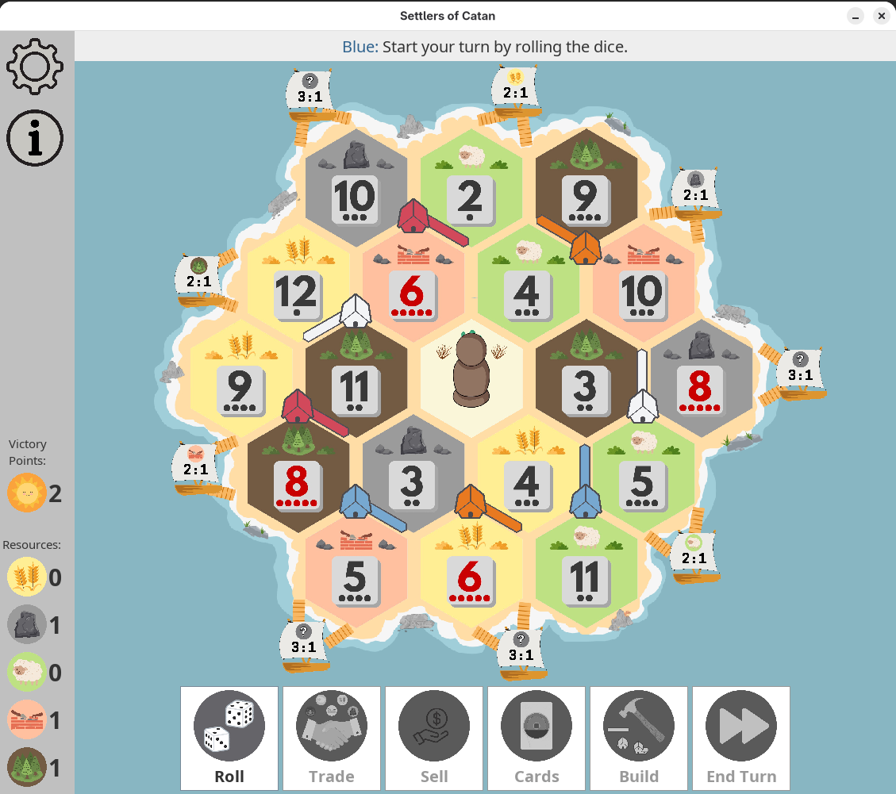
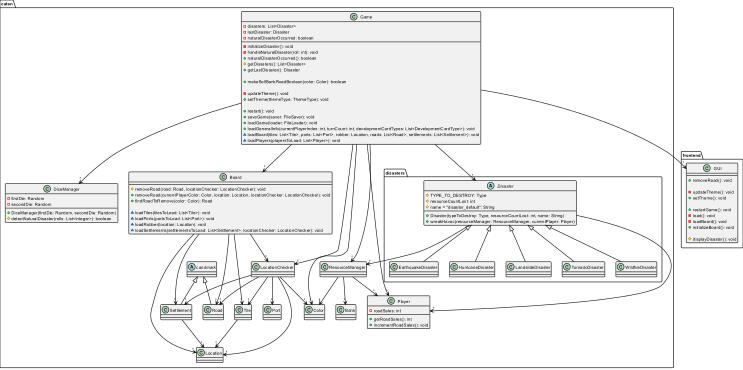
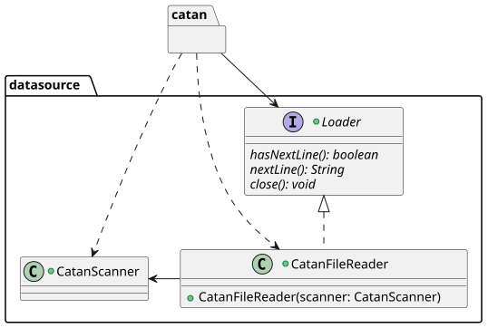
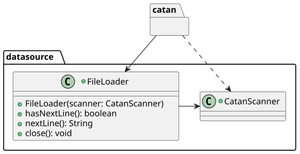

Expanding and Documenting Catan
In Software Construction and Evolution, we learned about software maintenance, refactoring, and documentation. For our course project, my group expanded on another member's Software Quality Assurance project, which was Catan written in Java.

Tasks
For the project, we added new features and refactored 20 code smells (15 unique smells) and 10 unique testing code smells or seams. In addition, we wrote user and developer guides to document how a user installs and plays the game and processes for developers to add to and maintain the game.
Software Architecture and Design
We used a three-layer architecture because we had a graphical user interface, game logic, and a feature for loading and saving games. This architecture would make it easy to change how games are loaded and stored or load other information into the game. Also, if a user wanted a different frontend but still have the Catan game logic, they could build another frontend and use the existing game logic.
Below are some simplified UML class diagrams of our final design depicting some changes from our new features and refactorings.



Development Processes
This is an overview of our build tasks and development workflow.
Build Processes
The project used Gradle as a build tool. It also had many software quality tools and test cases since the original project was developed with test-driven development. The build build task assembles the game and runs unit, integration, style, mutation, and code coverage tests, including 854 automated unit and integration tests. We also have build tasks for creating the JAR for deployment and generating test reports.
Version Control and Continuous Integration
The original project had a continuous integration framework using GitHub Actions to run the build task when a developer creates a pull request to merge into main. We included that continuous integration framework in our project and used branch protection. Then, for developers to merge into main they need review and approval from two group members, and all their tests must pass.
New Features
We added the following new features:
- Gameplay themes
- Natural disasters
- Road sales
- Save and load games
- Restart game
Saving and Loading Games
This is the feature that I implemented. A user can save the game to a text file and then load that game to start in the exact same state. The file structure was inspired by the ros2_control xacro files used in ROCKO, which are actually XML files, with three main blocks for storing general information, like the current player, board data, and player data. A complete game file can be found here.
<player color="white">
<resource_cards>
<resource_card type="ore">2</resource_card>
<resource_card type="ore">1</resource_card>
<resource_card type="wheat">1</resource_card>
<resource_card type="brick">1</resource_card>
<resource_card type="lumber">0</resource_card>
<resource_card type="wool">0</resource_card>
</resource_cards>
<development_cards>
<knight/>
</development_cards>
<largest_army has_largest=false size=0/>
<longest_road has_longest=false length=1/>
</player>
Player block example
Since we only had a data layer and frontend layer, we created a new data layer with classes to read and write blocks and elements. Methods in those classes are called from importer and exporter classes in the domain layer, which populate the block, line, and element fields with game data to write and read the data. Also, the loader is used by the adjacency initializer to create the board, which was added in the same project milestone as the save feature to fix a code smell.

Design Rationale
The writeBlock method takes the block's name, attributes, method for writing the block's contents, and the arguments for that method. That reduces duplicate code because the blocks are all structured the same way, but their contents depends on what is being stored. For example, a block may store multiple player blocks or the locations of game tiles. Since the methods for writing block contents may need different parameters, those parameters are passed into writeBlock as a map, using the WriteBlockArgName enum as the keys.
This is not shown in the simplified UML class diagram, but FileLineInfo is abstract to improve code for error checking and handling.
We use CatanFileWriter and CatanScanner to implement the adapter pattern so that our code does not directly depend on external libraries. Then, if those libraries change, we would only need to update our code in one place.
Code Smell Refactorings
This section briefly describes the code smells I refactored. For a more in-depth version, see this pdf, which is a compilation from project milestone submissions.Duplicate Code
The game is set up using letters for tile locations, vertices, and edges. Since those locations all need to be organized, the Adjacency class defines relationships, like which tile edges are adjacent to a tile intersection. In the original code, there are many calls to mapping functions with hard-coded locations, where the only differences are the location letters. Also, those mapping functions all have very similar logic.
// ROW NINE
this.mapRoadToRoads(’M’, ’m’, ’n’, ’Q’);
this.mapRoadToRoads(’M’, ’Q’, ’m’, ’N’);
this.mapRoadToRoads(’N’, ’Q’, ’M’, ’R’);
this.mapRoadToRoads(’N’, ’R’, ’Q’, ’O’);
this.mapRoadToRoads(’O’, ’R’, ’N’, ’S’);
this.mapRoadToRoads(’O’, ’S’, ’R’, ’P’);
this.mapRoadToRoads(’P’, ’S’, ’O’, ’h’);
this.mapRoadToRoads(’P’, ’h’, ’S’, ’g’);
// ROW TEN
this.mapRoadToRoads(’m’, ’Q’, ’l’, ’M’);
this.mapRoadToRoads(’Q’, ’R’, ’k’, ’N’);
this.mapRoadToRoads(’R’, ’S’, ’j’, ’O’);
this.mapRoadToRoads(’S’, ’h’, ’i’, ’P’);
Duplicate code in Adjacency
We removed the duplicate code by reading the adjacency information from a file and using loops to add the information to the maps. We used polymorphism to create an initializer for setting up each type of adjacency map.

Adjacency with polymorphismLarge Method
The Location Checker class has many large methods with nested loops and conditionals, making the methods difficult to read. To make the methods more readable, we extracted the code in the loops and conditional blocks into separate methods with self-documenting names. An example from getDefaultSettlementLocations is below.
Before
public Set<Location> getDefaultSettlementLocations(Color color) {
Set<Location> settlementLocations = new HashSet<>();
for (Location roadLocation : this.roads.get(color)) { // find all roads of color
for (Location settlementLocation : this.adj.getRoadToSettlements(roadLocation)) { // adjacent settlements
if (this.settlementPlacedAt(settlementLocation)) continue; // remove obstruction
boolean closeSettlement = false;
for (Location adjacentSettlement :
this.adj.getSettlementToSettlements(settlementLocation)) {
if (this.settlementPlacedAt(adjacentSettlement)) { // remove spots with adjacent settlements
closeSettlement = true;
break;
}
}
if (!closeSettlement) {
settlementLocations.add(settlementLocation);
}
}
}
return settlementLocations;
}
After
public Set<Location> getDefaultSettlementLocations(Color color) {
Set<Location> settlementLocations = new HashSet<>();
for (Location roadLocation : this.roads.get(color)) {
settlementLocations.addAll(this.findSettlementLocationsAdjacentToRoad(roadLocation));
}
return settlementLocations;
}
private Set<Location> findSettlementLocationsAdjacentToRoad(Location roadLocation) {
Set<Location> settlementLocations = new HashSet<>();
for (Location settlementLocation : this.adj.getRoadToSettlements(roadLocation)) {
if (this.settlementPlacedAt(settlementLocation)) continue; // remove obstruction
if (!this.hasAdjacentSettlement(settlementLocation)) {
settlementLocations.add(settlementLocation);
}
}
return settlementLocations;
}
private boolean hasAdjacentSettlement(Location location) {
for (Location adjacentSettlement : this.adj.getSettlementToSettlements(location)) {
if (this.settlementPlacedAt(adjacentSettlement)) {
return true;
}
}
return false;
}
Temporary Field
Temporary fields are fields that are only assigned values under specific conditions and could be uninitialized. This code smell can be eliminated by using polymorphism or default values.
One example of temporary fields in our project is in the Tile class. That class has temporary fields number and type since those fields are only used when the tile is not a desert (isDesert field is false). Then, when we want to find the number or type of a tile, we first need to check whether it is the desert.
We fix this class by introducing a new tile/resource type, NONE, and setting the default number to 0, an impossible value to roll.
Before
After
Type:
public enum Type {
WHEAT("wheat"),
ORE("ore"),
WOOL("wool"),
BRICK("brick"),
LUMBER("lumber");
...
}
Type:
public enum Type {
WHEAT("wheat"),
ORE("ore"),
WOOL("wool"),
BRICK("brick"),
LUMBER("lumber"),
NONE("none");
public static final Type[] RESOURCE_TYPES = new Type[]{WHEAT, ORE, WOOL, BRICK, LUMBER};
...
}
Tile:
public class Tile {
Location location;
int number;
Type type;
boolean isDesert;
public Tile(char location, int number, Type type) {
assignLocation(location);
setNumber(number);
this.type = type;
this.isDesert = false;
}
public Tile(char location) {
assignLocation(location);
this.number = 0;
this.isDesert = true;
}
public boolean getIsDesert() {
return this.isDesert;
}
...
}
Tile:
public class Tile {
Location location;
int number;
Type type;
public Tile(char location, int number, Type type) {
assignLocation(location);
setNumber(number);
this.type = type;
}
public Tile(char location) {
assignLocation(location);
this.number = 0; // impossible to roll 0
this.type = Type.NONE;
}
public boolean getIsDesert() {
return this.type == Type.NONE;
}
...
}
Speculative Generality
Speculative generality is when the code contains hooks, like interfaces or delegation, that are not needed but were added because the developers thought they might be needed at some point. Those add extra complexity and should be added in later if they are needed.
We had a Loader interface so that we could use other types of loaders, besides file loaders. Since we only use a file loader, the interface is unnecessary. Also, the methods in Loader are specific to loading files.
To fix this code smell, we removed the Loader interface in the datasource layer.
Before

After

Testing Code Smell Refactorings
This section briefly describes the testing code smell I refactored. I only refactored one since I also implemented a test along a seam. For a more in-depth version, see this pdf, which is from one of our milestone submissions.Test Only Code in Production
We fix this class by introducing a new tile/resource type, NONE, and setting the default number to 0, an impossible value to roll.
Before
After
DiceManager:
public DiceManager() {
this.firstDie = new SecureRandom();
this.secondDie = new SecureRandom();
}
public void setDie(Random firstDie, Random secondDie) {
this.firstDie = firstDie;
this.secondDie = secondDie;
}
DiceManager:
public DiceManager(Random firstDie, Random secondDie) {
this.firstDie = firstDie;
this.secondDie = secondDie;
}
DiceManagerTest:
@ParameterizedTest
@CsvSource({
"0,0", "0,1", "0,2", "0,3",
"0,4", "0,5", "1,0", "1,1", "1,2", "1,3", "1,4", "1,5",
"2,0", "2,1", "2,2", "2,3",
"2,4", "2,5", "3,0", "3,1", "3,2", "3,3", "3,4", "3,5",
"4,0", "4,1", "4,2", "4,3",
"4,4", "4,5", "5,0", "5,1", "5,2", "5,3", "5,4", "5,5",})
public void rollDice_Mocked(int firstRoll, int secondRoll) {
Random firstDie = EasyMock.createMock(Random.class);
Random secondDie = EasyMock.createMock(Random.class);
EasyMock.expect(firstDie.nextInt(6)).andReturn(firstRoll);
EasyMock.expect(secondDie.nextInt(6)).andReturn(secondRoll);
EasyMock.replay(firstDie);
EasyMock.replay(secondDie);
DiceManager diceManager = new DiceManager();
diceManager.setDie(firstDie, secondDie);
List diceRolls = diceManager.rollDice();
assertEquals(2, diceRolls.size());
assertEquals(firstRoll + 1, diceRolls.get(0));
assertEquals(secondRoll + 1, diceRolls.get(1));
EasyMock.verify(firstDie);
EasyMock.verify(secondDie);
}
DiceManagerTest:
@ParameterizedTest
@CsvSource({"0,0", "0,1", "0,2", "0,3",
"0,4", "0,5", "1,0", "1,1", "1,2", "1,3", "1,4", "1,5",
"2,0", "2,1", "2,2", "2,3",
"2,4", "2,5", "3,0", "3,1", "3,2", "3,3", "3,4", "3,5",
"4,0", "4,1", "4,2", "4,3",
"4,4", "4,5", "5,0", "5,1", "5,2", "5,3", "5,4", "5,5",})
public void rollDice_Mocked(int firstRoll, int secondRoll) {
Random firstDie = EasyMock.createMock(Random.class);
Random secondDie = EasyMock.createMock(Random.class);
EasyMock.expect(firstDie.nextInt(6)).andReturn(firstRoll);
EasyMock.expect(secondDie.nextInt(6)).andReturn(secondRoll);
EasyMock.replay(firstDie);
EasyMock.replay(secondDie);
DiceManager diceManager = new DiceManager(firstDie, secondDie);
List diceRolls = diceManager.rollDice();
assertEquals(2, diceRolls.size());
assertEquals(firstRoll + 1, diceRolls.get(0));
assertEquals(secondRoll + 1, diceRolls.get(1));
EasyMock.verify(firstDie);
EasyMock.verify(secondDie);
}
Testing Along Polymorphic Seams
A new testing concept we learned about was testing along polymorphic seams. Testing along seams is especially useful for GUI elements since they cannot be mocked well with tools, like EasyMock.
For our software quality assurance projects, we were not required to test the GUI elements since it was outside the scope of the course. Since we were missing those tests, we implemented tests along seams for the getMakeBankTradeAction and getMakePlayerTradeAction methods for the trade buttons. Those tests would ensure that the correct actions were taken when those buttons were pressed.
We created a TestableGUI class and a TestableGame class, which extend GUI and Game, respectively. The testable classes contain booleans describing whether specific methods were called and variables for return values for methods. We can then use mocking to create instances of the testable classes, letting us check method calls and their arguments.
Controls, we can ensure that methods are called to take the correct actions when a user uses a trade button.
Code
The code for the methods to test, tests, and test classes are below.
Controls
ActionListener getMakeBankTradeAction(GUI gui, JFrame tradeFrame, Map inputs) {
return event -> {
Type giveType = this.getRadioType(inputs, InputType.RADIO1);
Type receiveType = this.getRadioType(inputs, InputType.RADIO2);
int giveAmount = this.getBankRatio(inputs);
BankTradeOffer bankTradeOffer = new BankTradeOffer(giveAmount, giveType, receiveType);
if (gui.getGame().makeTradeWithBankBoolean(bankTradeOffer)) {
tradeFrame.dispose();
gui.setGameState(GameState.TURN);
gui.updateFrame();
} else {
showInvalidTradeDialog(tradeFrame);
}
};
}
ActionListener getMakePlayerTradeAction(GUI gui, JFrame tradeFrame, Map inputs) {
return event -> {
Map giveTypes = this.getSpinnerTypes(inputs, InputType.SPINNER1);
Map receiveTypes = this.getSpinnerTypes(inputs, InputType.SPINNER2);
Color color = this.getTradeColor(inputs);
if (gui.getGame().makeTradeWithPlayerBoolean(color, giveTypes, receiveTypes)) {
tradeFrame.dispose();
gui.setGameState(GameState.TURN);
gui.updateFrame();
} else {
showInvalidTradeDialog(tradeFrame);
}
};
}
ControlsTest
public class ControlsTest {
@Test
public void getMakeBankTradeAction_validActionPerformed_expectActionPerformed() {
Controls controls = EasyMock.partialMockBuilder(Controls.class)
.addMockedMethod("getRadioType")
.addMockedMethod("getBankRatio")
.createStrictMock();
TestableGame testableGame = new TestableGame();
testableGame.setMakeTradeWithBankBooleanReturnValue(true);
TestableGUI testableGUI = new TestableGUI(testableGame);
JFrame tradeFrame = EasyMock.createMock(JFrame.class);
tradeFrame.dispose();
EasyMock.expectLastCall();
Map<InputType, JComponent> inputs = new HashMap<>();
EasyMock.expect(controls.getRadioType(inputs, InputType.RADIO1)).andReturn(Type.ORE);
EasyMock.expect(controls.getRadioType(inputs, InputType.RADIO2)).andReturn(Type.WHEAT);
EasyMock.expect(controls.getBankRatio(inputs)).andReturn(2);
ActionListener actionListener = controls.getMakeBankTradeAction(testableGUI, tradeFrame, inputs);
EasyMock.replay(controls);
actionListener.actionPerformed(null);
EasyMock.verify(controls);
Assertions.assertTrue(testableGUI.getSetGameStateCalled());
Assertions.assertEquals(GameState.TURN, testableGUI.getSetGameStateCalledGameStateArg());
Assertions.assertTrue(testableGUI.getUpdateFrameCalled());
}
@Test
public void getMakeBankTradeAction_invalidActionPerformed_expectInvalidTradeDialog() {
Controls controls = EasyMock.partialMockBuilder(Controls.class)
.addMockedMethod("getRadioType")
.addMockedMethod("getBankRatio")
.addMockedMethod("showInvalidTradeDialog")
.createStrictMock();
TestableGame testableGame = new TestableGame();
testableGame.setMakeTradeWithBankBooleanReturnValue(false);
TestableGUI testableGUI = new TestableGUI(testableGame);
JFrame tradeFrame = EasyMock.createMock(JFrame.class);
Map<InputType, JComponent> inputs = new HashMap<>();
EasyMock.expect(controls.getRadioType(inputs, InputType.RADIO1)).andReturn(Type.ORE);
EasyMock.expect(controls.getRadioType(inputs, InputType.RADIO2)).andReturn(Type.WHEAT);
EasyMock.expect(controls.getBankRatio(inputs)).andReturn(2);
controls.showInvalidTradeDialog(tradeFrame);
EasyMock.expectLastCall();
ActionListener actionListener = controls.getMakeBankTradeAction(testableGUI, tradeFrame, inputs);
EasyMock.replay(controls);
actionListener.actionPerformed(null);
EasyMock.verify(controls);
}
@Test
public void getMakePlayerTradeAction_validActionPerformed_expectActionPerformed() {
Controls controls = EasyMock.partialMockBuilder(Controls.class)
.addMockedMethod("getSpinnerTypes")
.addMockedMethod("getTradeColor")
.createStrictMock();
TestableGame testableGame = new TestableGame();
testableGame.setMakeTradeWithPlayerBooleanReturnValue(true);
TestableGUI testableGUI = new TestableGUI(testableGame);
JFrame tradeFrame = EasyMock.createMock(JFrame.class);
tradeFrame.dispose();
EasyMock.expectLastCall();
Map<InputType, JComponent> inputs = new HashMap<>();
Map<Type, Integer> spinner1 = new HashMap<>();
spinner1.put(Type.ORE, 1);
EasyMock.expect(controls.getSpinnerTypes(inputs, InputType.SPINNER1)).andReturn(spinner1);
Map<Type, Integer> spinner2 = new HashMap<>();
spinner1.put(Type.WHEAT, 1);
EasyMock.expect(controls.getSpinnerTypes(inputs, InputType.SPINNER2)).andReturn(spinner2);
EasyMock.expect(controls.getTradeColor(inputs)).andReturn(Color.BLUE);
ActionListener actionListener = controls.getMakePlayerTradeAction(testableGUI, tradeFrame, inputs);
EasyMock.replay(controls);
actionListener.actionPerformed(null);
EasyMock.verify(controls);
Assertions.assertTrue(testableGUI.getSetGameStateCalled());
Assertions.assertEquals(GameState.TURN, testableGUI.getSetGameStateCalledGameStateArg());
Assertions.assertTrue(testableGUI.getUpdateFrameCalled());
}
@Test
public void getMakePlayerTradeAction_invalidActionPerformed_expectInvalidTradeDialog() {
Controls controls = EasyMock.partialMockBuilder(Controls.class)
.addMockedMethod("getSpinnerTypes")
.addMockedMethod("getTradeColor")
.addMockedMethod("showInvalidTradeDialog")
.createStrictMock();
TestableGame testableGame = new TestableGame();
testableGame.setMakeTradeWithPlayerBooleanReturnValue(false);
TestableGUI testableGUI = new TestableGUI(testableGame);
JFrame tradeFrame = EasyMock.createMock(JFrame.class);
Map<InputType, JComponent> inputs = new HashMap<>();
Map<Type, Integer> spinner1 = new HashMap<>();
spinner1.put(Type.ORE, 1);
EasyMock.expect(controls.getSpinnerTypes(inputs, InputType.SPINNER1)).andReturn(spinner1);
Map<Type, Integer> spinner2 = new HashMap<>();
spinner1.put(Type.WHEAT, 1);
EasyMock.expect(controls.getSpinnerTypes(inputs, InputType.SPINNER2)).andReturn(spinner2);
EasyMock.expect(controls.getTradeColor(inputs)).andReturn(Color.BLUE);
controls.showInvalidTradeDialog(tradeFrame);
EasyMock.expectLastCall();
ActionListener actionListener = controls.getMakePlayerTradeAction(testableGUI, tradeFrame, inputs);
EasyMock.replay(controls);
actionListener.actionPerformed(null);
EasyMock.verify(controls);
}
}
TestableGame
public class TestableGame extends Game{
private boolean makeTradeWithBankBooleanReturnValue;
private boolean makeTradeWithPlayerBooleanReturnValue;
public TestableGame() {
super(true);
makeTradeWithBankBooleanReturnValue = false;
makeTradeWithPlayerBooleanReturnValue = false;
}
@Override
public boolean makeTradeWithBankBoolean(BankTradeOffer bankTradeOffer) {
return makeTradeWithBankBooleanReturnValue;
}
public void setMakeTradeWithBankBooleanReturnValue(boolean returnValue) {
this.makeTradeWithBankBooleanReturnValue = returnValue;
}
@Override
public boolean makeTradeWithPlayerBoolean(Color color, Map<Type, Integer> give, Map<Type, Integer> receive) {
return makeTradeWithPlayerBooleanReturnValue;
}
public void setMakeTradeWithPlayerBooleanReturnValue(boolean returnValue) {
this.makeTradeWithPlayerBooleanReturnValue = returnValue;
}
}
TestableGUI
public class TestableGUI extends GUI {
private boolean updateFrameCalled;
private boolean setGameStateCalled;
private GameState setGameStateCalledGameStateArg;
public TestableGUI(TestableGame testGame) {
super(true);
this.game = testGame;
this.setGameStateCalled = false;
this.setGameStateCalledGameStateArg = null;
this.updateFrameCalled = false;
}
@Override
public void updateFrame() {
this.updateFrameCalled = true;
}
public boolean getUpdateFrameCalled() {
return this.updateFrameCalled;
}
@Override
public void setGameState(GameState gameState) {
this.setGameStateCalled = true;
this.setGameStateCalledGameStateArg = gameState;
}
public boolean getSetGameStateCalled() {
return this.setGameStateCalled;
}
public GameState getSetGameStateCalledGameStateArg() {
return this.setGameStateCalledGameStateArg;
}
@Override
public Game getGame() {
return this.game;
}
}
Documentation Overview
Another main part of the project was writing user documentation for various users, such as players, developers, and maintainers. Our documentation consisted of
- an installation guide,
- a gameplay guide with the Catan rules and our user interface,
- development environment information,
- development workflows,
- development conventions,
- planned changes,
- software requirements,
- software architecture and design, and
- testing strategy.
I worked on the installation guide and parts of the development and maintenance guide. A summary of those sections are below, and the complete versions are in this pdf.
Installation Guide
The installation guide included prerequisites and instructions for installing and running the game from our GitHub Releases page. It also had a more detailed set of instructions with screenshots.
It was challenging to find a good way to package the game for release. We wanted to use a JAR file to simplify the installation and set up process for the user since they would only need to download a single file to play the game. However, we had image files for the game board and pieces, which cannot be included in a JAR file. Instead, we needed to create a zip file with the JAR file and image resources, making the installation process slightly more complex, but the user only needs to download a zip file and unzip it.
Parts of Development and Maintenance Guide
This guide is intended for developers, maintainers, and helpdesk staff. It gives an overview of the development environment, like Java version, file structure, frameworks, build tasks, and programming conventions. Additionally, it describes the developer workflow and how to create a release to deploy with detailed instructions to keep releases consistent.